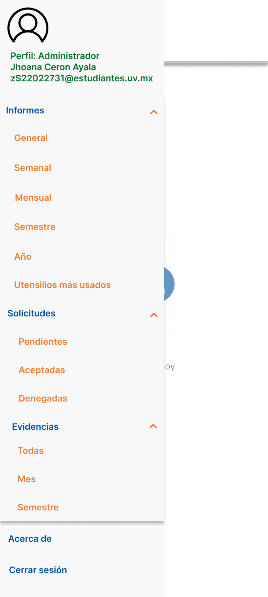
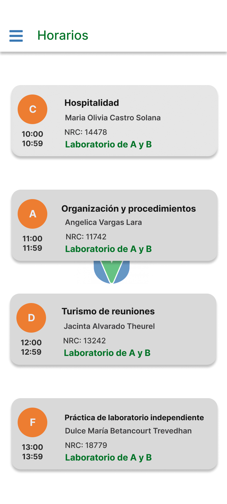
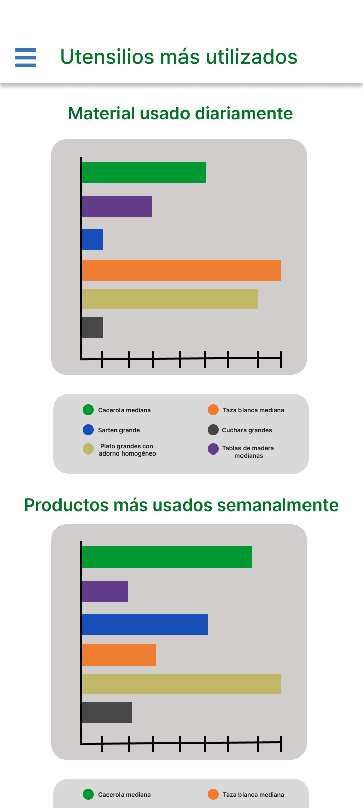

Automatización Laboratorio Alimentos y Bebidas
Diseño de interfaz móvil para la automatización de accesos, reservas y gestión de reportes en el Laboratorio de la Facultad de Administración de la Universidad Veracruzana.
Expediente Técnico
- Rol: Diseñador UX/UI Líder
- Institución: Universidad Veracruzana
- Plataforma: Aplicación Móvil (UI/UX)
- Impacto: Digitalización completa de procesos y turnos
01. El Problema & Contexto
El Laboratorio de Alimentos y Bebidas de la Facultad operaba con registros físicos y controles manuales propensos a errores de captura, saturación de horarios y dificultades en el seguimiento de prácticas por parte de los alumnos.
"¿Cómo estructurar un flujo móvil intuitivo que permita a la comunidad universitaria gestionar accesos y reportes sin fricción?"
02. Investigación & Requerimientos
Se mapearon los requerimientos institucionales de la UV estructurando las pantallas clave: desde el acceso seguro con matrícula hasta la visualización de calendarios, inventarios y estadísticas.
- Autenticación rápida mediante matrícula institucional.
- Navegación lateral simplificada para control de opciones.
- Paneles informativos con gráficas de uso y reportes.
03. Flujos de Usuario & Arquitectura de Pantallas (Figma)
Diseño completo del sistema móvil en Figma. Haz clic en cualquier pantalla de la cuadrícula para verla en tamaño grande con zoom.

Navegación y Opciones

Selección de Horarios

Gestión de Equipo

Reportes y Gráficas
04. Solución de Interfaz (UI)
Se respetó la identidad institucional de la Universidad Veracruzana integrando el escudo oficial y los colores institucionales (azul y verde), combinados con elementos limpios de diseño móvil moderno.
05. Resultados & Conclusión
Este prototipo interactivo en Figma resolvió las necesidades operativas del laboratorio, ofreciendo una experiencia digital fluida, accesible y totalmente adaptada a la comunidad de la Facultad de Administración.